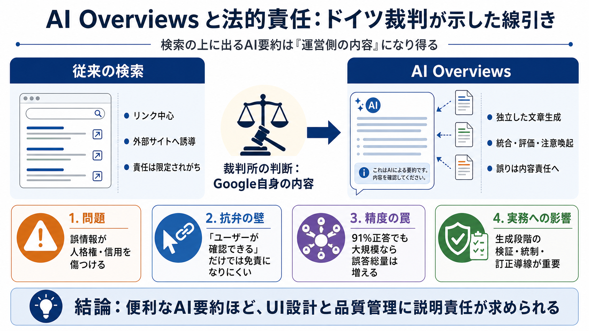

German Court Rules AI-Generated Content Not Eligible for Copyright
[Sign in](https://www.linkedin.com/login?session_redirect=https%3A%2F%2Fwww%2Elinkedin%2Ecom%2Fposts%2Famirkashdaran_cop…

[Sign in](https://www.linkedin.com/login?session_redirect=https%3A%2F%2Fwww%2Elinkedin%2Ecom%2Fposts%2Famirkashdaran_cop…
# Google's AI Takes the Heat: German Court Ruling Sets Bold Precedent. A German court holds Google accountable for AI-ge…
The ruling thus joins the majority of case law that denies protection under copyright and patent law. * The concept of a…
Essentially, it clarifies that if a Google search for one’s name produced a link to a blog post containing false and lib…
... Google's AI chatbot Gemini reproduced parts of its news articles without permission or payment. It is asking a Hunga…